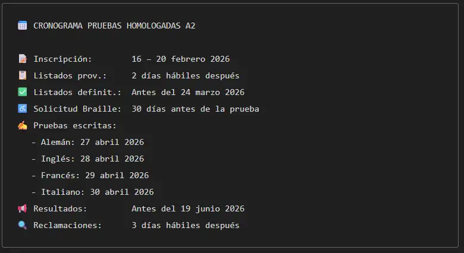

Convocatoria de las pruebas homologadas A2 – Curso 2025/2026
La Conselleria de Educación, Cultura y Universidades
ha publicado la Resolución de 17 de diciembre de 2025
por la que se convocan las pruebas homologadas del nivel
A2 del Marco Común Europeo de Referencia para las Lenguas
(MCER) para el curso 2025/2026.
 Foto